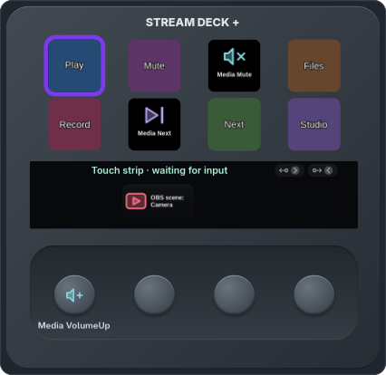
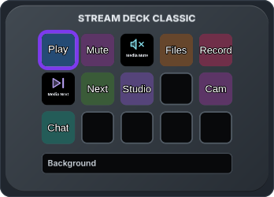
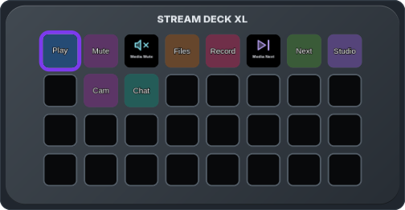
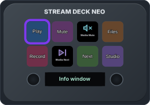

A published GitHub release tagged vX.Y.Z is required, and the version in that release's Cargo.toml must equal X.Y.Z (otherwise the installer stops before building). Release mode needs curl and GNU tar, downloads the latest published release and builds it locally.
Downloaded sources, build output and a temporary CARGO_HOME live in one installer-owned temporary directory, removed on success, failure or interruption.
Only the binary, launcher, icon and license are installed; existing Cargo caches and checkouts are never removed.
The installer also accepts --tag=vX.Y.Z. This skips the latest-release lookup and downloads exactly that tag's archive with the same safety limits and cleanup.
Invalid, missing or repeated tags exit with a usage error before downloading or creating files. The option is rejected in checkout mode.
Prebuilt binary. From v1.0.0 each GitHub release also carries sdeck-plus-X.Y.Z-x86_64-linux.tar.gz and its .sha256:
the sdeck-plus binary, the launcher, the icon, the udev rule, the license, the README and an INSTALL.md with the install steps. On Arch Linux the release also carries sdeck-plus-X.Y.Z-1-x86_64.pkg.tar.zst, which installs with sudo pacman -U; the tarball is not a pacman package. It is built on Arch Linux and links GTK 4 dynamically, so it runs only on x86_64 with glibc 2.39 or newer and GTK 4.8 or newer.
Check it with sha256sum -c, then copy the binary to a directory on your PATH; on other systems use the installer, which builds from source.
Switching between the installer and the package. Remove the other copy first (./install.sh --uninstall before sudo pacman -U,
or sudo pacman -R sdeck-plus before ./install.sh) so only one sdeck-plus remains. Start at login keeps working:
install.sh repoints an existing entry at its executable, and the package's executable repoints an entry whose executable no longer exists the next time it starts.
Alternatively, clone the repository and run ./install.sh to build that checkout without requiring a published release. Or try it without installing:
cargo run
The installer builds the release binary with Cargo.lock and installs ~/.local/bin/sdeck-plus, the launcher
~/.local/share/applications/dev.streamdeck.EventMonitor.desktop, the icon
~/.local/share/icons/hicolor/scalable/apps/sdeck-plus.svg and the license in ~/.local/share/doc/sdeck-plus/.
PREFIX overrides the executable prefix, an absolute XDG_DATA_HOME the data directory, and CARGO_TARGET_DIR the build output in checkout mode only. Release mode ignores a caller's CARGO_TARGET_DIR and uses temporary output instead.
It runs from any directory, refuses to run as root, does not enable autostart or launch the app, and re-running it updates the files
(./install.sh --help for usage).
After installing
Afterwards it reports a missing PATH entry, a running instance still using the old executable,
missing optional tools, and a connected device your user cannot open (printing the udev rule an administrator can install, without running it).
An existing Start at login entry that points at another executable (for example /usr/bin/sdeck-plus from the pacman package) is
repointed at the installed one; no entry is created when there is none. A symlinked entry is left untouched, and one without an Exec line in its
[Desktop Entry] group is reported with a note to disable and re-enable Start at login from the installed application.
Or use ./install.sh --uninstall from a checkout. Use the same PREFIX and XDG_DATA_HOME as for installation. Uninstall does not download or build a release. Configuration, profiles, artwork and any
Start at login entry are kept, and a running instance is not stopped.
Requirements
Build and runtime requirements
Rust stable toolchain and Cargo, a C toolchain, pkg-config and glib-compile-resources
GTK 4.8 or newer and libudev development files
A StatusNotifierItem tray (for example, Omarchy's)
A supported Stream Deck over USB (+, + XL, Classic, XL, Mini or Neo; see Supported devices), with permission to open its HID node
Keyboard and mouse-wheel actions need /dev/uinput access
Optional tools and device access
Optional, per action: xdg-utils (files and websites), wireplumber (wpctl), pipewire (pw-dump),
curl (weather), wtype (typing text; wl-clipboard is the fallback), procps-ng (closing processes), mpv (sounds), canberra-gtk-play (timer chime), an MPRIS player (media transport).
If opening the device is denied, install the repository's udev rule as an administrator. udev/70-sdeck.rules grants your user access to the product ids of every supported model (one line each, listed under Models at a glance) with
TAG+="uaccess":
curl -fsSL https://raw.githubusercontent.com/aldosilvestre/sdeck-plus/main/udev/70-sdeck.rules | sudo tee /etc/udev/rules.d/70-sdeck.rules
sudo udevadm control --reload-rules
Then reconnect the device (the installer prints these commands when needed). Missing tools or access are reported; the app never installs packages or changes permissions.
sdeck-plus drives six Elgato models: the Stream Deck +, Stream Deck + XL, Stream Deck Classic, Stream Deck XL,
Stream Deck Mini and Stream Deck Neo, and several can be connected at the same time. Each model has its own window content, stores, editor and preview; the window shows the one you are configuring
and only the controls that model has. Only the Stream Deck + has been tested on real hardware. The other five are implemented from Elgato's HID documentation and validated with a simulated device, and running several devices at once has been validated only with simulated devices.
Simulator only means implemented from Elgato's HID documentation and validated with a simulated device: the simulator decodes the model's input reports and captures every report sent to it,
checking its size, image format, rotation and chunk headers, and the brightness, sleep and blank reports. It checks the reports against our reading of the documentation, not against the hardware,
so real-hardware validation is pending. Details the documentation leaves open are separate fields in the registry, so they can be corrected once a real unit is available; each model's section lists what is still unconfirmed.
The previews below are rendered from the real window by the screenshot generator, with no device.
Stream Deck +
Preview

The window's preview of the Stream Deck +.
Controls
8 keys in four columns and two rows, numbered row by row. Each has a press action, an optional two-second hold action, and its own picture, text and live information.
4 dials, each with press, clockwise and counterclockwise actions.
A touch strip with four sections, one above each dial: tap and hold per section, flick and swipes on the whole strip, and touchscreen pages (see Touch strip and touchscreen pages).
<data>/sdeck-plus/, the original folder (see Data per model)
Validation status
Developed and tested on this hardware: the opt-in real-device checks were run on one Stream Deck +. It is the only model tested on real hardware, and only on its own.
Simulate it
Open the real window with a simulated Stream Deck + plugged into the real hub (see Simulated devices). The preview shows the eight keys, the touch strip with its four sections and the four dials.
It runs over scratch folders, so your configuration is never read or changed, and a simulated device has no physical keys to press. Close the window to finish.
Implemented from Elgato's HID documentation and validated with a simulated device; real-hardware validation is pending. It has not been run on a real Stream Deck + XL.
Simulate it
Open the real window with a simulated Stream Deck + XL plugged into the real hub (see Simulated devices). The preview shows the 36 keys, the touch strip with its six sections and the six dials.
It runs over scratch folders, so your configuration is never read or changed, and a simulated device has no physical keys to press. Close the window to finish.
The window configuring the Stream Deck + XL (rendered by the screenshot generator, with no device).
Stream Deck Classic
Preview

The window's preview of the Stream Deck Classic. The bar under the keys selects the page's background picture.
Controls
15 keys in five columns and three rows, numbered row by row, with press and optional hold actions, pictures, text and live information.
A background picture for each keypad page, shown behind the keys: select the Background bar under the keys in the preview and choose Image… under Appearance (Background picture).
Remove binding clears it, with an Undo in its toast. A key without a picture of its own shows its part of the background, with its icon, text or live information on top; a key's own picture covers it.
No dials and no touch strip: the window shows no Dials tab, touchscreen page controls or strip settings for it.
Sizes, product ids and data
USB ids
0fd9:006d, 0fd9:0080, 0fd9:00a5, 0fd9:00b9: the revisions Elgato's Classic page lists (the MK.2 family). The original Stream Deck, 0fd9:0060, speaks another protocol and is not supported.
Key picture
72 × 72 JPEG, rotated 180° before upload
Background
480 × 272 JPEG, rotated 180°, sent whole with Update Full Screen Image (02 08) before the key pictures. Key 1 sits 11 px from the left and 5 px from the top; keys are 72 px with 25 px between them.
<data>/sdeck-plus/devices/classic/; the backgrounds are in keypad-background.conf (see Data location and files)
Validation status
Implemented from Elgato's HID documentation and validated with a simulated device; real-hardware validation is pending. It has not been run on a real Stream Deck Classic.
Simulate it
Open the real window with a simulated Stream Deck Classic plugged into the real hub (see Simulated devices). The preview shows the fifteen keys and, under them, the Background bar that selects the page's background picture.
It runs over scratch folders, so your configuration is never read or changed, and a simulated device has no physical keys to press. Close the window to finish.
Unconfirmed without hardware: how the full-screen picture and the key pictures sent after it combine on the device, whether every firmware revision of the family accepts it, the orientation of Elgato's key layout figure, and the timing.
Update Background (02 0D) is not used: it only stores a picture, and the Classic page documents no way to show a stored one.
Quitting does not clear the background picture; brightness 0 hides it.
Configuration bundles carry the backgrounds. A build made before the background existed refuses to import a Classic bundle that has one; a bundle without one imports as before.
A build made before the background existed leaves keypad-background.conf untouched. If such a build deletes a page, that page's background stays in the file, and a new page with the same name shows it.
Stream Deck XL
Preview

The window's preview of the Stream Deck XL.
Controls
32 keys in eight columns and four rows, numbered row by row, with press and optional hold actions, pictures, text and live information.
No dials, no touch strip and no background picture: the window shows no Dials tab, touchscreen page controls or strip settings for it, and the XL receives key pictures only.
Implemented from Elgato's HID documentation and validated with a simulated device; real-hardware validation is pending. It has not been run on a real Stream Deck XL.
Elgato also documents a 1024 × 600 full-screen picture for the XL; the app does not offer a background on it.
Simulate it
Open the real window with a simulated Stream Deck XL plugged into the real hub (see Simulated devices). The preview shows the 32 keys, with no Dials tab and no touch strip settings.
It runs over scratch folders, so your configuration is never read or changed, and a simulated device has no physical keys to press. Close the window to finish.
6 keys in three columns and two rows, numbered row by row, with press and optional hold actions, pictures, text and live information.
No dials and no touch strip: the window shows no Dials tab, touchscreen page controls or strip settings for it.
Sizes, product ids and data
USB ids
0fd9:0063, 0fd9:0090, 0fd9:00b3, 0fd9:00b8
Key picture
80 × 80 BMP (24-bit), transposed before upload
Protocol
Legacy Mini, from Elgato's Stream Deck Mini page: a fixed 65-byte input report (the report id, then one byte per key), key pictures in 1024-byte reports with a 16-byte header, and feature reports of its own for brightness
Data folder
<data>/sdeck-plus/devices/mini/
Validation status
Implemented from Elgato's HID documentation and validated with a simulated device; real-hardware validation is pending. It has not been run on a real Stream Deck Mini.
Two details Elgato's page leaves open follow the open-source drivers that run on real Minis (python-elgato-streamdeck and node-elgato-stream-deck): the key number in a picture's header counts from 1, and pictures are transposed (Elgato's page says rotated 90° clockwise).
If a real Mini shows its pictures one key off or mirrored, these are the details to correct.
Simulate it
Open the real window with a simulated Stream Deck Mini plugged into the real hub (see Simulated devices). The preview shows the six keys, with no Dials tab and no touch strip settings; the simulated Mini receives its key pictures as BMP, like a real one.
It runs over scratch folders, so your configuration is never read or changed, and a simulated device has no physical keys to press. Close the window to finish.
Unconfirmed without hardware: the key numbering and orientation above, the show-image flag sent only with the last part of a picture, the BMP header details, part numbering from 0, the brightness range (0 to 100 is sent) and the 32-byte feature reports (the python driver sends 17 bytes).
A playing title too long for its key scrolls by sending the key's picture again and again; as BMP that is about 190 KB per second per key, and whether a Mini keeps up is unknown.
Sleep and Quit set the brightness to 0, as on the other models (the Mini's sleep command only sets an idle timer, which the app does not use), and quitting blanks the keys instead of showing Elgato's logo.
Stream Deck Neo
Preview

The window's preview of the Stream Deck Neo: the info window sits between the two touch buttons.
Controls
8 keys in four columns and two rows, numbered row by row, with press and optional hold actions, pictures, text and live information.
2 touch buttons, one on each side of the info window, with their own action on each keypad page: select one in the preview (Tab reaches them after the keys and the window) and choose its action with the Action selector.
A touch runs the action once, when it starts. They have no hold action, live information, multi action or picture (Elgato documents no image for them).
An info window without touch that shows each keypad page's own picture and live information, like a section of the + touch strip: select it in the preview, set its picture under Appearance (target Info window)
and its reading in the Binding tab with Show live information on the window (time and date, now playing, volume, weather and the other sources). A Start timer countdown running on the shown page appears there too. The window runs no action.
No dials, no touch strip and no touchscreen pages.
Sizes, product id and data
USB id
0fd9:009a
Key picture
96 × 96 JPEG, rotated 180° before upload
Info window
248 × 58 JPEG, rotated 180°, sent whole with Update Window Image (02 0B)
Touch buttons
Reported after the eight keys in the key input report
<data>/sdeck-plus/devices/neo/; the touch buttons are tb:1 and tb:2 rows and the window's reading a window row in layers.conf (see Data location and files)
Validation status
Implemented from Elgato's HID documentation and validated with a simulated device; real-hardware validation is pending. It has not been run on a real Stream Deck Neo.
Known limits: the info window takes no button text (text is for keys only), and the touch buttons take no picture.
Simulate it
Open the real window with a simulated Stream Deck Neo plugged into the real hub (see Simulated devices). The preview shows the eight keys and, under them, the Info window between the two round touch buttons.
It runs over scratch folders, so your configuration is never read or changed, and a simulated device has no physical keys to press. Close the window to finish.
The app looks for vendor id 0x0FD9 with the product ids of the six models (listed under Models at a glance). Every match is driven, so you can plug in several models, or two of one model.
Other Elgato products, such as the original Stream Deck (0x0060), are never matched, even if plugged in. The header lists what is connected and names only the controls those models have, for example
"Stream Deck +, Stream Deck Classic and Stream Deck XL connected — keys, dials and touch strip are live" or "Stream Deck Classic connected — keys are live".
Each device runs its own configuration
One hub serves all connected devices. Each model has its own session: its pictures, its key, dial and touch actions, its timers and its profiles. A device receives only the pictures of its own model, and input on one never runs the other's actions.
The Current selector
Current appears in the header only while two or more different models are connected; choosing a model makes the window show and edit that model. With one model, or none, there is no selector and the window looks the same as with a single device; with no device it shows the last model you used.
The selector only chooses what the window edits: every connected device keeps running. Switching never asks about unsaved edits, because the other model keeps its draft.
With one model connected the window shows it. When several are, it shows the last model used if it is connected, else the first connected one in the order Stream Deck +, + XL, Classic, XL, Neo, Mini. Your choice stays until that model has no device left. The last model shown is remembered for the next start.
Two devices of one model
Two Stream Decks of the same model share that model's profiles and mirror each other: same pictures, same active page and timers, and a key on either runs the same action. Brightness and sleep follow the model.
Unplugging
Unplugging one device leaves the others running. If it was the last device of the model on screen, the window shows the remaining model; with none left it keeps showing the current one and reconnecting retries automatically. Quitting clears every connected device.
The OBS menu and Test action act on the model shown; focus-based profile switching reaches every model.
Validation status
Running several devices at once has been validated only with simulated devices, through the real hub into the real window. It has not been tested with two physical Stream Decks. Only the Stream Deck + has been tested on real hardware, and only on its own; the other five models are validated with a simulator (see each model above).
Preview of each model
The window draws the shown model, as in each model's preview above: the + as eight keys, four dials and four touch sections; the + XL as 36 keys in nine columns and four rows (numbered row by row), six dials and six touch sections aligned with the dials;
the Classic as 15 keys with the Background bar under them; the XL as 32 keys; the Mini as six keys; the Neo as eight keys with the info window between its two touch buttons.
Control pickers, accessible names and keyboard order describe the same model: Tab visits the keys row by row, then the Classic's Background bar or the Neo's info window, then the Neo's touch buttons.
Two models connected: the header shows Current (simulated devices; not tested on two real units).
Data per model
Separate folders
Each model has its own profiles, pages, bindings, artwork, information and OBS settings. <data> is $XDG_DATA_HOME, or ~/.local/share when it is unset. The Stream Deck + keeps <data>/sdeck-plus unchanged;
every other model uses <data>/sdeck-plus/devices/<id>/ (plus-xl, classic, xl, mini or neo), a complete independent set of the files listed under Data, tray and lifecycle.
Shared across models, in $XDG_CONFIG_HOME/sdeck-plus: tray.json, updates.json and device.json (the last model used).
Backups
Export format 5 records the model. Importing a bundle made for another model is refused with a message naming the bundle's model, for example "This configuration is for Stream Deck Classic; connect that model to import it.".
Import into the + keeps the devices/ folder. Format 5 bundles cannot be imported by older versions of sdeck-plus, and a Classic bundle that carries a background picture needs a build that knows backgrounds (see Stream Deck Classic).
Adding a model
Every supported model is one entry in a registry (src/device_model.rs), and the editor, stores, previews and the screenshot generator read it instead of fixed numbers.
All six entries, each described from Elgato's HID page for the model, are supported. The original Stream Deck (0x0060), the Pedal, the Studio and the Mobile have no entry.
To add a model, see DEVICES.md.
Configuration
How each part of the application behaves, where it stores its data and what it needs from the system.
Saving or inspecting a binding never executes it; only Test action or input from the device does.
The app never installs packages, changes permissions or edits OBS configuration.
Getting around
Main window and connection status
The header says in plain words whether a supported device is connected (for example "No Stream Deck connected — plug one in", "Stream Deck + XL connected — keys, dials and touch strip are live"
or "Stream Deck Neo connected — keys, touch buttons and info window are live") next to a colored Not connected, Unavailable, Disconnected or Connected badge;
hover it for the USB IDs (VID 0x0FD9 and the product ids of every supported model, or of the connected one) and technical details. See Supported devices.
If the device is absent, inaccessible or disconnected, the window stays open, reports the state and retries detection.
Touch gestures use Elgato's logical-pixel space of the strip (800 × 100 on the Stream Deck +, 1200 × 100 on the + XL) and are reported after the interaction completes,
not as separate contact start and release events. Each dial in the preview shows the action it is assigned to.
Configure an action
For keypad buttons, use the right-hand panel, which has three tabs. Actions: search the catalog, open a category and drag an action onto a key or a dial. Dropping on a dial asks whether it belongs to Turn clockwise, Turn counterclockwise or Press; clicking an action with a dial selected uses the event chosen in the inspector.
Dials: drag a preset (Volume, Microphone, Brightness, Tracks, Scroll or Pages) onto a dial. A preset assigns turn and, where it makes sense, press, replaces only the events it lists and saves immediately without running anything.
Binding: options saved with the selected control, such as live information.
Its configuration opens below the fixed-size device preview; long forms scroll inside the settings area. Actions without parameters save on drop without executing;
actions that need settings keep the previous binding active until you complete the form and click Save binding.
You can also select a key and click a catalog action instead of dragging.
Choosing another action replaces the draft already on that control; if the draft is on a different control you are asked before it is discarded. Existing key-to-key dragging still swaps saved settings and artwork.
The action selector remains available for dials and the touch strip; keys use the Actions catalog:
Select a profile tab and page, then click one of the keys (eight on the Stream Deck + and the Neo, 36 on the + XL, 15 on the Classic, 32 on the XL, six on the Mini), the touch strip or one of the dials (four or six; models without them do not show them).
For dials and the touch strip, pick an event valid for that control: dial press, clockwise or counterclockwise; touch tap, hold, flick and directional swipes. A key's Event, Action, Category and More-actions selectors are hidden: choose its action from the Actions catalog, and its own fields and description appear below. Select Hold 2 seconds to configure its optional secondary action without replacing the short action.
Pick an action and fill only its visible fields. Shortcuts accept a full chord such as CTRL + D or one key with the optional Ctrl, Alt, Shift and Super toggles.
The three icon buttons at the right end of the editor's heading row (beside Configuring: …) act on the selected control and stay visible while the form below them scrolls: the floppy disk (Save binding) creates or updates the control event, the play button (Test action) runs it once, and the red circled X (Remove binding) clears the whole control: every event of the key, dial or touch area, with its page returns and live information, whichever event is selected. Only a toast confirms it, with an Undo action for ten seconds that brings all of it back, even if you selected another control meanwhile; a later Remove or message replaces it. If you changed that control after removing it, Undo refuses and keeps your changes. Hover any of them for a tooltip that explains what it does; results and errors appear in a toast at the top center of the window, never as a line below the plugin buttons.
A toast confirms success only after the binding is written to disk and disappears after five seconds; errors stay, with an icon-only Dismiss button, until dismissed or replaced.
Selecting a configured event loads its saved action for editing. Bindings do not inherit or fall through between layers.
Profile rail, Actions catalog and the selected key's settings under the Save, Test and Remove icons of its heading row.
Assignment summaries
Hover a control to see its assignments on the selected keypad page or touchscreen page, including Unassigned events:
dials list Press, CW and CCW; the strip lists tap, hold, flick and directional swipes.
Legacy exact-tick rotation overrides appear separately. Long text is shortened; select the event to see every saved field.
Summaries refresh after saving or removing bindings, changing layers and Go to profile or page actions.
Selection, live input and swapping keys
The control being edited has a thick violet ring. A pressed key or dial gets a green outline and brightens while held,
a dial turn flashes amber, and a touch tap, hold or flick lights the touched zone in cyan, drawn over any artwork.
Drag a key onto another key in the preview to exchange their action, background image and text styling on the current page.
An empty key exchanges its empty configuration too. The exchange is saved automatically and never runs either action;
other pages, dials, touch zones and unsaved editor drafts are unchanged. Dropping on the same key or cancelling changes nothing.
Controls and actions
Action types
In the right-hand panel the search box narrows the catalog to the actions whose names match. Multimedia lists its actions in groups: Media, Output, Input and Files.
The Action menu offers layer and page switching, shell commands, launching applications, keyboard shortcuts,
named events, the categorized More actions, Play sound and None.
Untouched buttons, including those on new profiles and pages, start with None: it keeps a saved binding that does nothing,
can still show artwork, text or live information, and never schedules a page return.
A key can also run several actions in order with More actions > System > Multi action (see Multi action).
Test action runs the selected action immediately and can affect the desktop, the device or OBS; test only what you intend to perform.
Dials and device brightness
The dials (four on the Stream Deck +, six on the + XL) have independent press, clockwise and counterclockwise bindings, for example volume up and down on rotation and mute on press,
or relative brightness on another dial. Mouse-wheel directions are vertical or horizontal.
Device brightness is the Stream Deck's display, not the monitor backlight. Sleep sets brightness to zero and wake restores the remembered level;
before an explicit absolute level, relative and wake actions assume 100% because the device cannot report its brightness.
Legacy exact-tick rotation bindings remain supported and take priority over directional ones.
The Dials tab provides Volume, Microphone, Brightness, Tracks, Scroll and Pages presets (Microphone: turns change the input volume, press mutes the microphone). Drag one onto a dial to save its listed events; unlisted events are preserved. For a single action, drag it from Actions and choose the dial event in the popup.
Dropping a catalog action on a dial asks which event to bind.
Sounds and audio output
Choose Play sound, then Choose file... or enter a path. WAV, MP3, FLAC, OGG, M4A/AAC, Opus and other formats decoded by
mpv work. Playback replaces the app's previous sound; More actions > Multimedia > Stop audio file stops only app-owned playback,
not other media players.
Saving a Play sound or Open file or folder binding with an absolute path creates a symbolic link to the target inside the app's data directory (links/) and stores that link. Relative paths are kept unchanged. The editor still shows the real file, and the same file reuses one link. If the original is moved or deleted, or a relative path such as dry-fart.mp3 or ~/Music/dry-fart.mp3 points nowhere (playback does not expand ~), the key or touch section shows a red cross so you can see it could not run: it replaces the key's own image while the file is missing, and any button text stays on top of the cross, otherwise it is labeled Missing file. Live information still takes priority over the warning. The warning updates when the control is redrawn (for example after saving or changing pages), not immediately when a file disappears. Images are different: they are copied into the app's own storage when chosen. Exports contain relative file references only: ./sonidos/name.mp3, ./imagenes/name.png and ./archivos/name. Neither file contents nor original parent paths or symlink destinations are included.
Key 8 shows a missing sound as a red cross behind its text.
Change audio output switches the default PipeWire output with wpctl; Refresh discovers new outputs with pw-dump.
Bindings store the stable device name, so reconnecting does not select a different device; a disconnected saved device reports an error when used.
Rotate advances from the system's current output to the next connected one on each press, wrapping after the last.
Volume uses the default output; the step of Volume up and Volume down is configurable from 1 to 100 percent (default 5%), and raising is capped at 100%. Dial turns apply one step per event. Media transport uses the session's MPRIS player.
Microphone (audio input)
The same controls exist for the default input (microphone), under More actions > Multimedia:
Input volume up and Input volume down (a step of 1 to 100 percent, default 5%, raising capped at 100%; the step is always saved with the action),
Mute microphone (toggles the default input) and Change audio input.
Change audio input picks a fixed microphone by its stable PipeWire name or Rotate advances from the system's current input to the next connected one on each press, wrapping after the last; Refresh discovers new inputs.
Inputs are the devices PipeWire lists as audio sources; a disconnected saved device reports an error when used. Output and input actions are independent: changing the output never touches the microphone.
Dial turns apply one step per event, and the Microphone preset in the Dials tab binds them in one drop.
Text, files, websites and processes
Text is typed through a Wayland virtual keyboard with wtype, so it reaches any focused window (terminals included) whatever its paste shortcuts are, and it leaves the clipboard alone; a line break in the text is typed as Return.
Type text can also press keys at any point, like a small macro: {Enter}, {Tab}, {Esc}, {Up}, {Down}, {Left} and {Right} (in any letter case) press that key there, so user{Tab}password{Enter} fills a login form and sends it.
The Insert key buttons under the text put a key at the cursor, and the line below them shows what is typed (Types: user ⇥ password ⏎); Press Enter after text still adds a final Enter. {{ types a literal {; any other brace, such as {Foo}, is typed as written. To type a token itself, double its opening brace ({{Enter} types {Enter}); a text saved before this version that contains a token or {{ now presses that key or types a single brace.
Each part of the text is one wtype run with the keys after it, one run after another; if wtype disappears partway, the action stops with an error and nothing is typed twice.
Without wtype, or when the compositor lacks the virtual-keyboard protocol wtype needs (checked before anything is typed), it falls back to the Wayland clipboard (wl-copy): for each part of the text it replaces the clipboard and the primary selection and sends a physical Shift+Insert chord, which only works where Shift+Insert pastes, and each key is pressed as a physical key. Files, folders and HTTP(S) websites open with xdg-open.
Close application targets its exact Linux process basename (1–15 ASCII bytes), not a window title or a shell pattern.
Commands and application launch
Applications are launched with distinct process arguments; no shell evaluates them. In the argument box, an empty box means zero arguments
and \empty on its own line means one empty argument. Backslash, newline, carriage return and tab are written as
\\, \n, \r and \t, so leading and trailing spaces are preserved.
Only the Command action runs /bin/sh -c with the configured string. External actions run one at a time on a background worker,
and failures appear in the window without blocking it.
Optional two-second key hold
Save a key's short action, then select Hold 2 seconds and choose its secondary action from the Actions catalog.
Parameterless actions such as Cancel timer save automatically; otherwise fill the settings and use Save binding.
Release before two seconds to run only the short action; hold for two seconds to run only the secondary action. Releasing afterwards does nothing.
For example, assign Start timer to the short action and Cancel timer to the hold action.
Clear the toggle to edit the short action again. Remove binding removes the whole key, the short and the hold action together (Undo in its toast restores both for ten seconds);
without a hold action, keys run immediately on key-down. Hold actions keep independent page returns and do not replace primary artwork or live information.
Dial presses and touch-strip gestures are unchanged.
Countdown timers
Device > Start timer starts a countdown of 1–86400 seconds. Starting it with a physical keypad key temporarily shows
the time left on that key and its app preview in five characters: hh:mm from one hour onwards (7200 seconds → 02:00),
or mm:ss below one hour (3599 seconds → 59:59, 45 seconds → 00:45).
A hh:mm or mm:ss label sits above the large digits and changes with the displayed units.
Its font is approximately 60% of the fitted digits' font size, keeping the format readable without adding extra words.
The countdown stays on its original page, survives reconnects, and restores the key's artwork, text or live information when it ends or is cancelled.
While a timer is running, another Start timer action is ignored: its deadline, remaining time and key picture stay unchanged.
Cancel it or wait until it finishes before starting another. This also applies to Test action and dial or touch input, which do not claim a keypad key.
When it finishes, sdeck-plus sends one system notification
with the timer duration, even while the configuration window is hidden. Desktop notification settings, including Do Not Disturb, control its presentation;
the in-app completion status remains available. Completion also plays the desktop theme's alarm-clock-elapsed sound using optional
canberra-gtk-play, independently of notification settings and without stopping a Play audio file action.
Audio output, volume and theme sound availability still determine audibility. If the helper is missing or playback fails, the GTK bell is attempted
(it may be silent); the notification is still sent. An ignored start does not add a notification or chime. Cancel timer cancels the countdown
without a completion notification or chime, and Quit cancels pending timers. Saving a binding does not start it.
A non-None binding can return to a page after a delay: tick Return to a page afterwards, pick the destination
(listed with its profile and folder, such as Base or Studio / Page 2) and a delay of 1–86400 seconds.
Pressing the key again restarts the wait and Device > Cancel timer cancels it. Saving never starts the wait.
Multi action
Multi action, in the System category of the Actions catalog, runs several actions from one key in a fixed order, for example a shortcut, a short wait, a command and then a page change.
It is available only for a key press and for a key's Hold 2 seconds action; the catalog dims it while a dial or the touch strip is selected, and dropping it on a dial is refused with a message such as "Multi action cannot be assigned to a dial press."
Editing the steps. Choosing it replaces the action's fields with a numbered Steps list, empty for a new multi action. Add step opens a dialog with the editor's Action menu and fields (None is not offered);
Add wait asks how long to pause, in milliseconds or seconds, from 10 ms to 60 s (seconds may have decimals). Each row shows the step's number, icon and summary, such as Wait 500 ms, and four buttons:
Move up, Move down, Edit step (pencil) and Remove step (trash). A multi action holds 1 to 16 steps, at least one of them an action; Add step and Add wait are disabled at 16.
Changing the steps is an unsaved edit like any other field: Save binding stores the whole list, and editing or saving never runs a step. Test action runs the whole sequence.
What a step can be. Any action except None, another Multi action, Start timer, Cancel timer and the touchscreen page actions. Go to profile or page and the Organization page and folder actions may only be the last step.
Save refuses a list that breaks a rule with a sentence in the toast, such as "Step 1: Go to profile or page can only be the last step" or "A multi action needs at least one action step", and stores nothing.
The whole multi action, every step included, must fit the 4096-byte storage limit of one action; a longer one is refused with "Multi action is too large to store".
Strict order. Each step starts only after the previous one finished: a command when its process exits, an application as soon as it is launched (not when it closes), a plugin action when the plugin answers,
shortcuts, desktop and OBS actions once they are done, and device actions (brightness, sleep) once they are queued for the Stream Deck. A wait pauses only its own sequence: the window and the other keys keep working.
The status line reads "Multi action started." and, after the last step, "Multi action finished."; a Return to a page afterwards set on the binding starts only then.
Pressing the key again while its sequence runs is ignored: it neither restarts it nor starts a second one.
When a step fails. The first step that fails stops the sequence; the remaining steps do not run, and an error toast names the step, for example "Multi action stopped at step 2: process exited with exit status: 1".
A command fails when it exits with an error. An error reported after its step already counted as finished, such as an application that fails after it was launched, does not stop the sequence.
Limits. A step has no time limit of its own: a command that never ends keeps the key's sequence waiting, and further presses ignored, until it ends. As with a single Command action, it also holds the action worker,
so the commands, shortcuts, desktop and OBS actions of other keys wait behind it. Importing a configuration ends running sequences without running their remaining steps.
Sounds, files and applications named by steps are handled like those of a single action (app-owned links, export references, the missing-file cross); deleting a profile, page or folder removes only the steps that go to it, or the whole binding when no action step is left,
and renaming a folder updates its steps. Older versions of sdeck-plus keep a saved multi action unchanged but neither show nor run it.
A four-step multi action: a shortcut, a 500 ms wait, a command and, as the last step, Go to profile or page.
Physical keyboard actions and /dev/uinput
Shortcut uses a Linux uinput virtual keyboard, not compositor dispatch, shell commands or text typing. Without modifiers it sends one key down/up;
with modifiers it holds them around the main key and releases them in reverse order (CTRL + D, SUPER + RETURN).
Modifiers are never kept held between actions; failed sends attempt release cleanup. Key names and aliases opens a reference of every accepted name, with the aliases laid out as a table (key and the other names it answers to),
without saving or running the draft.
Shortcut reference with aligned key names and their accepted aliases.
Chord text and modifier toggles are merged in CTRL, SHIFT, ALT, SUPER order. Names are case-insensitive; Control = CTRL,
Win/Windows/Meta = SUPER, Return = Enter. Uppercase letters do not add Shift.
Supported keys: ASCII letters and digits, F1–F24, Enter, Tab, Escape, Space, navigation, named punctuation, keypad and media keys. Unknown names,
empty segments, several main keys or modifier-only chords are rejected.
Media names: XF86AudioLowerVolume, XF86AudioRaiseVolume, XF86AudioMute, XF86AudioMicMute (mute_mic),
XF86AudioPlay (play), XF86AudioPause (media_pause), play_pause, XF86AudioNext (next_track),
XF86AudioPrev (previous), XF86AudioStop, XF86AudioRecord, XF86AudioRewind, XF86AudioForward,
XF86Eject, XF86MonBrightnessUp/Down and XF86KbdBrightnessUp/Down/XF86KbdLightOnOff.
PAUSE, NEXT and STOP keep their keyboard meanings; desktop bindings decide what media keys do.
Names identify physical key positions; the active keyboard layout decides the resulting symbols.
Saved legacy Press key actions keep working and show as a Shortcut without modifiers; they are rewritten only when you save them again.
Unsupported legacy names stay visible and report an error when run.
One persistent virtual keyboard is opened on first use, after a 200 ms discovery grace period. It needs kernel uinput support and effective access to
/dev/uinput; failures are reported with no fallback, privilege escalation, module loading or permission change.
Ask an administrator for narrowly scoped access if needed. Mouse-wheel actions need the same access.
Live information on keys and dials
In the Binding tab of the right-hand panel, tick Show live information on the key for the selected key or dial and choose volume (crossed out while muted), audio output device,
Stream Deck brightness, time and date, weather, CPU, memory, temperature (bars turn amber and red under load), OBS state (recording, streaming and scene)
the microphone (Microphone volume and mute, crossed out while muted, or the Audio input device name, also crossed out while muted, both with a microphone icon) or Now playing (the title and artist with a play icon, greyed with a pause icon while paused, and Nothing playing when no media plays).
On a key the icon, value, bar and caption are drawn over the key's own image and always fit; on a touch section they sit on a see-through tile
beside the icon, leaving the page-indicator edge free. Only the control showing a value is redrawn, the binding's action still runs, and the
window preview matches the device. The Stream Deck Neo's info window shows a reading too, chosen with Show live information on the window (see Stream Deck Neo).
Binding tab with the live-information toggle for the selected control.
Each touch section can show information for its Tap or Hold binding. A dial's section shows its press binding first, then its turns, then a tap or hold on
that section. Flick, swipes and whole-strip gestures cannot show information. Weather uses Open-Meteo through curl with a city or
latitude,longitude, needs internet access and shows -- when the lookup fails. Volume and audio device use wpctl.
Now playing reads MPRIS players on the session bus every second without controlling them: a playing player wins, then the paused one that played
last; it shows -- when the session bus is unavailable. When the player's application icon can be found in the installed icon themes,
it replaces the play or pause icon, with a small play or pause badge in its corner. A title too long for its key or section scrolls slowly at a readable size
while it plays (after a short pause, then looping); a paused title stays still and ends in an ellipsis.
Touch strip and touchscreen pages
Sections and gestures
On the Stream Deck + the strip has four sections, one above each dial (the + XL has six; the numbers below follow the shown model). Choose Touch, then control 1 to 4, and give each section its own
Tap and Hold binding. Any keeps the older whole-strip bindings, which still handle taps no section claims.
Flick and swipes always apply to the whole strip.
The Classic, XL, Mini and Neo have no touch strip and no dials, so the window shows none of this for them; the Neo's info window takes no touch (see Stream Deck Neo).
Touch bindings, section information, strip and section images and every dial binding belong to the profile's selected touchscreen page,
not to keypad pages or folders: changing a keypad page or opening a folder keeps the touch page.
Touchscreen pages and swipes
Select a dial, the strip or a section to show Touch page. Browse with its selector and arrows, add a blank page with +,
or delete the selected one with the trash button after confirming (keypad pages are unchanged; a profile keeps at least one). Each profile remembers its
selection across restarts and holds up to 64 touch pages.
Swiping left shows the next touch page and right the previous one while those gestures have no binding of their own; a Flick binding also takes precedence.
Swipe up and down have no default. More actions > Organization > Next/Previous touchscreen page is offered only for touch controls and does not wrap.
Edge chevrons on the device and preview show available directions. Delayed returns still target keypad pages.
Touchscreen data and upgrades
Existing configurations migrate automatically: each distinct touch and dial configuration in a profile becomes a touchscreen page, equal ones share a page,
and actions, None bindings, delayed returns, information and image references are preserved. Upgraded version-1 touch pages keep their edits and receive a copy
of the dials from their profile's main keypad page; legacy records are retained and migration is not repeated. The upgraded touchscreen.json
is version 2, which older app versions cannot read.
Invalid touchscreen configuration blocks saving instead of replacing the file. layers.conf and touchscreen.json are staged together;
if the final replacement fails the previous layer file is restored, and a synced recovery journal lets startup restore or keep the pair after an interrupted save.
Unreadable recovery state is reported, never silently replaced.
Profiles, pages and folders
Profiles and application switching
Profiles are tabs, with Base always available and undeletable. The + beside PROFILES creates one
(Create profile stays disabled until the name is new). The pencil on a profile's row (Edit plus its name) opens Edit profile for that profile; it sets an optional window class or executable
name such as kitty, firefox or obs; Save changes is enabled only when the rule changed. Base cannot require an application.
The Return to the previous profile when focus leaves check below it (off by default, enabled only while the application field has text) makes that profile
give the screen back to the profile it replaced instead of Base. The trash on the row (Delete plus its name) asks for confirmation before it deletes the profile and everything in it; Base has no usable trash.
Detection uses Hyprland IPC focus events, not process polling. A matching application selects its profile; unmatched or unavailable focus returns to Base (or, with the return check on, to the profile that was shown before it, if that profile still exists and does not need another application);
focusing the configuration window keeps the last external context. A manual tab choice lasts until the next external focus change. Selecting a profile never
launches its application. Every start opens on Base's first page.
The Edit profile dialog: Cancel and Save changes only; deleting a profile is its row's trash.
Pages
New page asks for a name first. The pencil renames the current page (Save name or Enter): names must be non-blank, without control
characters and at most 64 UTF-8 bytes; surrounding spaces are trimmed. The trash button deletes the page with its folders, bindings and artwork after confirming.
Previous, next and parent are separate flat 34 px icon buttons before the page name; Folders, New page, rename and delete are flat too. Navigation stays within the current profile and folder, and switching tabs restores that
profile's last page for the session.
Page folders
The folder icon in the page bar opens Page folders, a popover with a title and subtitle in its body and no Close button (Escape or a click outside dismisses it). Type a name in New folder name and press Enter; blank, duplicate and invalid names are explained
while typing. Each row offers Open, Link to selected key or dial (saves navigation to the folder on the selected key, or the selected dial and event, without opening it),
Rename (Enter saves, Escape cancels; linked controls follow the new name) and Delete (removes only this page's folder and its links).
Parent returns to the exact owning page.
organization.json stores this hierarchy (version 2, with stable page-owner keys). Version-1 folders attach to their former parent's first surviving page;
flat layers load as independent profiles; legacy brightness-v1 and scroll-v1 records load as typed actions.
Invalid metadata is kept untouched and disables organization writes until repaired.
Appearance
Button text
Right-click a key and choose Add text and image… (Edit text and image… once it has text). The popover opens on that key and also holds its Background image: Image… chooses one and Clear image removes it. The Appearance section is gone from the inspector for keys and dials; only the touch strip and its zones, the Stream Deck Neo's info window and the Stream Deck Classic's Background bar keep theirs for now. The popover names the key and page, for example "Key 3 on “Everyday / Page 1”".
Choose an installed font, a size from 6 to 120 px, horizontal or vertical orientation (vertical rotates the text 90° clockwise) and a position on a 3x3 grid.
Text is white with a black outline and may span several lines.
The preview shows the key as the device will: over its image, over its action icon when the text leaves room, or over black, with a warning when the text does not fit
(the device clips it). Save text or Ctrl+Enter saves; it is enabled only for non-blank changes, flagged by "Unsaved changes".
Closing (Escape or its button; there is no Close button) discards the draft. Remove text keeps the background image, and clearing the image keeps the text.
Text and background image editing in one key popover.
Window layout and themes
The window opens at 1120 × 884. Profiles sit in a vertical rail at the left, the same at every width, and the rail never scrolls: the connection badge, OBS (hover it to see what it does), then a PROFILES heading with a compact + New profile button beside it, then one row per profile: the name (long names are shortened with an ellipsis) followed by small pencil (Edit) and trash (Delete) icons, all always visible. The rail is 234 px wide. Only the content column beside it scrolls: a fixed 440 × 428 device preview with the selected control's settings; Actions, Dials and Binding tabs sit on the right. Long configuration forms scroll vertically within their own settings area rather than resizing the preview. The desk uses the window width up to 1240 px and centers beyond it; the Actions catalog always stays beside the preview, and a window narrower than about 940 px (1070 px for the Stream Deck + XL) scrolls the content column sideways instead of stacking the catalog below.
Charcoal (dark) or pale-gray (light) surfaces follow the desktop GTK theme, with violet save actions and a cyan keyboard-focus outline. Buttons are 34 px high with 8 px corners; flat buttons have no border until hovered, destructive ones (Delete, Import) are red, and the catalog's category filters are rounded-rectangle toggle buttons, not pills. Popovers have no arrow or Close button, and dialogs end in one right-aligned row: Cancel with its Esc hint, then the primary or danger action.
Bare information icons show their help on hover or keyboard-visible focus. A profile row's pencil and the + open the Edit profile and New profile dialogs, and Menu (Help, Updates, Import, Export) is at the far right of the header, level with the title; the Base profile callout explains its restrictions. Transitions follow GTK's animation setting. The full layout contract is in
DESIGN.md.
Profile auto-switch help shown by hovering its information icon.
Background images
For a key, right-click and use Image… or Clear image in its text/image popover. For the strip and its zones, pick a target in Artwork target (active layer) under Appearance, then choose or clear its image. The picker lists the touch-strip
background and each touch zone: five targets on the Stream Deck + (four zones), seven on the + XL (six zones); on the Neo it lists only Info window, on the Classic only Background, and on the XL and Mini nothing.
Clicking a zone selects its target; clicking a dial selects only its binding. PNG, GIF and any format
supported by the installed GdkPixbuf loaders work; GIFs are sent as a still image because the devices take still pictures (JPEG, or BMP on the Mini).
Images are center-cropped to the shown model's sizes, on the Stream Deck + 120 × 120 (keys), 800 × 100 (strip) or 200 × 100 (zone) JPEGs (every model's sizes are under Supported devices); the strip background and zones are layered.
Images are copied into the data directory, so originals can be moved or deleted. Artwork is independent per layer: switching layers replaces the device's
whole image state (unassigned keys turn black) and the same state is replayed after reconnecting. Clearing a key sends a black image; clearing strip artwork
rebuilds the strip from what remains. A file chooser saves to the target and layer captured when it opened. A failed import keeps the current assignment,
storage failures disable artwork writes instead of saving an empty fallback, and upload failures appear in the connection status.
Binding icons
Every action has a two-tone icon used in the Action and More actions menus, on the preview dials, and on keys and touch sections without
their own artwork, both in the preview and on the device. Each family has its own color: media violet, audio cyan, OBS red, apps and system amber, websites blue,
pages and folders white. Badges above the preview strip list what swipes, tap and hold do (dimmed while an unbound swipe keeps its default page change).
Your artwork normally wins; an idle Start timer key keeps its icon over the image when button text leaves room (the running countdown and Cancel timer are unchanged). A missing sound/file target instead shows a red cross even over artwork or behind centered/vertical text (live information retains priority). For other action icons, button text keeps its placement (the icon uses free space above or below it), and keys set to None or left unassigned stay black.
Icons are never saved into your artwork or text.
OBS Studio
Connect to OBS
In OBS, enable the built-in WebSocket server under Tools > WebSocket Server Settings. In sdeck-plus, click OBS in the profile bar, enter
the local endpoint (normally ws://127.0.0.1:4455) and password, save and test. The test queries scenes and recording/streaming state and never starts an
output. Scene, source and input names must match OBS.
Only loopback endpoints are accepted. Requests run on a worker with bounded waits, and authentication, connection and request errors appear in the window.
Credentials are stored in owner-only obs.json, not in bindings, and are masked in the editor and diagnostics.
The app does not enable the OBS server or change its configuration.
OBS actions
Under More actions > OBS: Switch scene, Toggle recording and Toggle streaming,
the explicit Start recording, Stop recording, Pause recording, Resume recording,
Start streaming and Stop streaming (use these when a key should never flip the current state),
Toggle input mute (an OBS input name) and Set source visibility (a scene and a source name, with Visible cleared to hide it).
OBS input volume up and OBS input volume down change the volume of a named OBS audio input by a step of 1 to 20 dB (default 2): the action reads the input's current level and sets the new one, never below -100 dB or above +26 dB, the limits OBS accepts.
Names are matched exactly and may be up to 512 characters without control characters. The OBS state can also be shown as live information on a key or dial.
Plugins
External plugins
A plugin is a separate program that adds actions. Each installed plugin appears as its own collapsible item in the Actions catalog, below the
built-in categories, under a Plugins heading, with its status. Plugins live in $XDG_DATA_HOME/sdeck-plus/plugins/<id>/ (or
$HOME/.local/share/sdeck-plus/plugins/<id>/), shared by every device model. The app only reads each manifest.json while browsing and
never enables anything by itself; the refresh button at the right end of the binding toolbar (Update plugins) reads the folder again. Folders with a bad manifest are listed with the reason and
do not affect the others or the built-in actions.
Adding a plugin. Press the Add plugin button (+) at the right end of the binding toolbar, immediately left of Update plugins, and enter an absolute folder path (or ~/..., or use Browse…) or the https:// address of a public repository whose root holds the plugin. Check plugin first validates it with the same rules as the validator and shows a preview (id, version, source and downloaded commit, files, actions, requirements) without installing or running anything; Install then adds it as a disabled item, and installing a plugin whose id already exists needs an explicit Replace, which disables it until you tick Enable again. Repositories are fetched with the system git (HTTPS only, shallow, no submodules or hooks, 60 s and 32 MiB limits); SSH, private repositories, choosing a branch or tag and removing a plugin from the app are not supported yet. Copying a plugin folder into the plugins folder by hand still works. Details for authors are in the plugin SDK guide.
Plugins run with your user's privileges, never with administrator (root) rights. Process separation is not sandboxing, so tick Enable only for plugins you trust.
Actions of a disabled plugin are listed but cannot be assigned or run. Assign an action like any other, complete its generated form (text, bounded number or
check box fields) and Save binding; saving never runs the plugin, only Test action or the control does. Each press runs the plugin
once on its own worker with a 5 second deadline, so a slow plugin cannot delay built-in actions, and errors appear in the status line.
Bindings keep the plugin and action ids and the field values. If the plugin is missing or no longer offers the action, the binding is kept as saved and the editor
says why. Exported bundles contain the bindings only, never plugin programs or the enabled list. See docs/plugins.md for the host contract.
Plugin values. When an enabled plugin action offers a display (for example a brightness level or the selected scene), binding it to a key, a dial or a touch section makes that control show the value the plugin reports, with an optional detail line and level bar. It shows ... until the first answer and -- if the plugin cannot answer. Live information you choose for the same control takes priority. The value is asked for when you change layer or page, connect the device or after one of that plugin's actions runs; it is not refreshed on a timer.
Writing a plugin? The plugin SDK guide covers the project layout, the manifest, the protocol, the limits, security and testing, and examples/plugin-template is a starter project you can copy.
Data, tray and lifecycle
Data location and files
Configuration lives in $XDG_DATA_HOME/sdeck-plus, or $HOME/.local/share/sdeck-plus when it is unset (normally
~/.local/share/sdeck-plus): layers.conf (keypad layers and bindings), touchscreen.json, organization.json,
info.json, obs.json, the assets directory with its artwork manifest and button-errors.log. These are the Stream Deck + files; every other model keeps its own set under
devices/<id>/ (see Data per model), and only the Stream Deck Classic's folder, devices/classic/, can also hold keypad-background.conf (see below).
Model-specific records.layers.conf rows are tab-separated, with hex-encoded page names. On the Stream Deck Neo, each touch button is bound like a key, as tb:1 or tb:2
(binding <page> tb:1 <action>), and the info window's live information is a window binding whose action is always none, with its info row
(binding <page> window none and info <page> window <source>). On the Stream Deck Classic, each page's background picture is a row of keypad-background.conf, beside the artwork manifest:
the page, touch-strip-background and the copied image, after a version line. The file exists only while a page has a background, and it travels in configuration bundles.
An unreadable or unsupported layers.conf leaves configuration unavailable with writes disabled; repair it and restart. In a readable file, invalid, conflicting
or duplicate records are removed and logged with their reasons in button-errors.log. Removing a layer also removes references to it.
A record this version does not know is not removed: an action of an unknown kind (for example one written by a newer version) and a row for an unknown control kind are kept unchanged, not run and not shown, written back on every
save and logged once as kept=. An unknown action is dropped only when you set that control again or delete its layer; a row of an unknown control kind goes only with its layer.
A touchscreen.json holding an unknown action or control kind is left untouched and saving stays disabled until it is readable.
sdeck-plus 1.0.0 and older remove rows of control kinds they do not know, but they do not drive a Neo, so they never open its folder.
Window under Hyprland
Under Hyprland the window opens floating at 1120×884, centered (smaller if the monitor's usable area is), so the content never needs a horizontal scroll. The app asks Hyprland for this through its command socket each time the window is shown, including again from the tray, and only while the window is tiled; later manual resizing is left alone. Outside Hyprland nothing happens and no Hyprland configuration is edited. To choose otherwise, add a window rule for class dev.streamdeck.EventMonitor, for example:
Add your own size and center, or tile to keep it tiled. A window that is already floating is not touched.
Backup and restore
Menu > Export configuration... writes one owner-only .sdeck-plus.json with profiles, folders, pages, bindings, image references, button text,
live information, page returns and OBS settings, including credentials. Format version 5 records the device model and stores configuration as readable UTF-8 text inside JSON, without base64. It never includes image, sound or other file contents.
File references keep only a type folder and filename: /home/aldo/.../musica/cancionX.mp3 becomes ./sonidos/cancionX.mp3;
all background images (keys, the whole touch strip and individual zones) use ./imagenes/filename.png, and Open file/folder targets and explicit executable paths use ./archivos/filename.
Existing copied images keep their app-assigned filename. Original directories and symlink destinations stay on the source machine.
Different targets with the same exported name cancel export with a collision message; rename one before retrying.
On import, these folders are relative to the destination's application data directory, not the export file or the working directory. Local files and links are preserved;
missing files do not block import. Put the files (or local symlinks to them) in those folders, or choose replacement files in the editor. Existing copied images in
assets can be reused by filename. An existing unreadable or invalid image cancels import rather than discarding its assignment.
Import validates first, asks for confirmation, retains previous configuration metadata in a sibling backup, and refreshes the device without running saved actions.
Bundles of another model are refused (see Data per model). Legacy version-1 to version-4 exports are Stream Deck + bundles and remain importable with their original encoding and file-reference rules.
This is not general secret redaction: URLs, command text, application arguments, button text and OBS credentials remain verbatim. Review those fields before sharing.
System tray and login startup
Closing the window hides it; the device, bindings, artwork, timers and app-owned playback stay active until Quit. Either click on the tray icon opens
Open configuration, Start at login, Start in tray (on by default; saved in tray.json), About and Quit.
A tray supporting StatusNotifierItem is needed to keep running with the window hidden.
Autostart writes $XDG_CONFIG_HOME/autostart/sdeck-plus.desktop (or ~/.config/autostart/) and starts the current executable with
--background. When the entry's executable no longer exists, for example after switching between install.sh and the pacman package,
the next start repoints it at the running executable (a symlinked entry is left alone, and Cargo builds under target/ never take it over). Run cargo run -- --background for a quiet manual start.
Startup waits up to 10 seconds for successful tray registration and an available host, without blocking configuration or device initialization.
If no usable tray appears (including an unreachable session bus), configuration opens with an explanation; closing it exits instead of hiding.
Repeated launches reuse the running instance and open configuration even while tray readiness is pending; late registration never hides that window.
The wait and fallback do not change saved preferences.
Release updates
Open Menu > Updates to see the release-check status or select Check for updates.
A newer stable release shows Update available: vX.Y.Z beside the connection badge; clicking it opens the Updates dialog.
Versions are compared numerically; draft and prerelease versions are ignored. Checking never installs anything.
Check for updates automatically is on by default. It checks on app open (including reopening an existing window),
no more than once per six hours in the running process. Turn it off to prevent automatic network checks; manual checks still work.
This check contacts api.github.com only for release metadata, without telemetry. It uses curl with an eight-second deadline
and a 256 KiB response limit. Offline or failed requests show Could not check for updates in the Updates dialog without interrupting work.
Update appears only after a newer release is found and only when the running executable resolves to
$HOME/.local/bin/sdeck-plus, the installer's default location. It never runs on startup, when inspecting settings or when saving bindings.
A copy under /usr, including pacman/AUR packages, shows Installed by your package manager. Update it with your package manager.
Checkouts, custom prefixes, symlinks resolving elsewhere and unknown origins show guidance to re-run the documented install command; they have no Update button.
Pressing Update downloads https://raw.githubusercontent.com/aldosilvestre/sdeck-plus/vX.Y.Z/install.sh
for the detected stable tag with system curl (HTTPS only, 30-second download deadline, 512 KiB maximum).
It runs the downloaded file with system bash and --tag vX.Y.Z, never a shell command string or a pipe.
The release installer builds exactly that version locally with the usual prerequisites and archive safety checks.
The downloaded script lives in a private temporary directory removed on success, failure or cancellation.
The installer runs on an owned worker, not the interface thread, with null stdin and only PATH, HOME, selected XDG and locale variables inherited.
Display, Cargo customization, shell startup and installer test/URL override variables are not inherited. No telemetry is added.
One update can run at a time; Update and both check controls are disabled while updating.
The overall deadline is 30 minutes. Failures show Update failed, the real nonzero exit code when available and the last 4 KiB of output;
download, launch and timeout errors are also reported. Closing to the tray keeps the update running. Quitting sends TERM to the process group,
waits up to 10 seconds for cleanup, then KILLs remaining processes and joins the worker.
After success, the Updates dialog reads Updated to vX.Y.Z. Restart to use it. Select Restart now when ready.
Restart is never automatic: the old instance quits normally, releases the device and application bus name, and only then launches the same executable
as a normal launch (no forced background flag). A failed replacement launch is printed to stderr.
The setting lives in $XDG_CONFIG_HOME/sdeck-plus/updates.json (or ~/.config/sdeck-plus/updates.json).
No release data is saved. An invalid preference is preserved, automatic checking is disabled and the Updates dialog shows the error;
repair the file and restart before changing it. A failed save leaves the previous setting active.
Quitting and reconnecting
Quit discards pending uploads, turns off display brightness, clears the keys, the touch strip and a Stream Deck Neo's info window to black (a Stream Deck Classic's background picture is not cleared; brightness 0 hides it), stops the action worker and app-owned playback,
cancels timers and releases the device; a blocked driver call can delay exiting. Independently opened applications stay open.
On the next launch brightness returns to 100% and saved artwork is replayed. While running, unplugging and reconnecting retries automatically.
Upgrading from the previous name
The application, package and executable are named sdeck-plus, with the data directory sdeck-plus and autostart entry
sdeck-plus.desktop; the application ID stays the same so launches reuse one instance. Files are not migrated automatically: quit the old application,
move its data directory to the new path to keep profiles, artwork and OBS settings, then disable the old autostart entry and re-enable Start at login.
Development
Checks and tools for working on sdeck-plus from a checkout. Build requirements are listed under Install.
The first four named test targets cover the model registry, per-model data folders and the preview layout engine for every model; the next five cover the Mini's protocol, the Neo's touch buttons and info window, and the Classic's background, without hardware. The headless run covers the Rust suites but skips display-dependent GTK bodies. Run native GTK cases separately in a graphical session so each process owns
its GTK main thread, for example:
The serialized layout test checks the thirteen artwork paths and every action at 1120 × 884, horizontal fit at 1840 × 980, 1280 × 720 and 960 × 640, and scroll
reachability at 640 × 480. These checks do not replace real file-chooser, accessibility or device verification.
Documentation screenshots
The captures in docs/screenshots are generated from the production widgets with isolated demonstration profiles; they do not operate a device,
change audio output or connect to OBS. Regenerate them from a graphical session (captures use a 1000 × 950 window). The same run renders the preview of every supported model, with no device, as preview-<model id>.png
(preview-plus.png, preview-plus-xl.png, preview-classic.png, preview-xl.png, preview-mini.png and preview-neo.png, shown under Supported devices), plus main-window-xl.png and main-window-two-devices.png (1152 × 916 and 1032 × 732, each with the window's 16 px margin: the first is the default 1120 × 884 window, the second a 1000 × 700 one; the second runs a simulated + and + XL through the real hub so the header shows the Current selector):
The model previews alone can be written with STREAMDECK_PREVIEW_PNG_DIR set for the preview test; the list of models comes from the registry, so a newly supported model gets its image automatically:
A manual launcher opens the real window over scratch directories, with simulated Stream Decks plugged into the real hub, so no hardware, real data or network is involved. It is ignored by the test suite and runs until you close the window.
SDECK_SIMULATE_MODEL is a comma-separated list of model ids (plus, plus-xl, classic, xl, mini or neo; default plus-xl); plus,plus-xl connects both and shows the Current selector.
Each model's section above has its own command. The window uses the app's own icons; the keys carry a few demo bindings instead of your configuration, and a simulated device has no physical keys to press.
These need a real device and have been run on a single Stream Deck + only; nothing was run on any other model or with two devices connected (verify_streamdeck is written for the Stream Deck +: its --input check waits for dial and touch input). Close other instances first so one HID worker owns the device. --device-controls sends real brightness (50%, relative), sleep and wake reports and leaves
brightness at 50%; --input waits up to 60 seconds for a key press, dial rotation and touch gesture; --button-text uploads horizontal and vertical text to key 1.
cargo run --offline --example verify_streamdeck -- --device-controls
cargo run --offline --example verify_streamdeck -- --input
cargo run --offline --example verify_streamdeck -- --button-text
cargo run --offline --example verify_obs -- "$HOME/.local/share/sdeck-plus"
cargo run --offline --example verify_desktop
dbus-run-session -- cargo run --offline --example verify_multimedia -- /path/to/silent.wav
cargo run --offline --example plugin_validate -- /path/to/plugin-project
The OBS check authenticates, queries scenes and output state and reselects the current scene, without recording or streaming; configure obs.json
through the app first. The desktop check pastes exact Unicode into its own window; the multimedia check runs mpv on an isolated D-Bus session and needs a local
silent audio file and the mpv-mpris plugin. plugin_validate only reads a plugin project (it copies it into a temp root and runs nothing); add --invoke <action> to deliberately run that plugin once with your privileges.
To capture the primitive UI widgets with no device (it runs no actions):
cargo run --offline --example ui_showcase -- <capture-dir>
In-process event API
src/event_api.rs defines the typed MonitorEvent boundary: Connection(ConnectionState), Input(protocol::Event) for decoded
HID input and ArtworkResult for upload results; consumers ignore the Heartbeat probe. start_hid_monitor returns an owned
HidController with an artwork sender, explicit cancellation and idempotent joined cleanup, and runs initialization, retries, timed reads and serialized
image writes on one thread. Only the newest pending artwork snapshot is applied, and GTK polls results with a short GLib timer.
Internal events use the MonitorEvent::AppEvent channel. There is no TCP, HTTP or WebSocket listener.
The protocol decoder validates the report ID and declared little-endian payload length before decoding input.
Writing a plugin
Plugins are separate projects, one repository each, so adding one never touches this repository. The plugin SDK guide is the author-facing documentation; docs/plugins.md is the host contract. Start from examples/plugin-template (a copyable Python 3 project with its own unit tests), check it with the first command below and keep the guide honest with the second, which runs the template through the validator and compares the guide's limits with the code:
cargo run --offline --example plugin_validate -- <plugin-dir>
cargo test --offline --test plugin_sdk
Code organization
src/main.rs
Startup, configuration window, worker lifecycle, GTK test fixtures
Protocol families (Expanded and Legacy Mini): input decoding, feature reports, picture encoding (JPEG, or BMP for the Mini) and output reports
src/config_bundle.rs
Configuration export, image references, validation, backup and restore
src/info.rs, src/info_render.rs
Live readings and the key/section compositor
src/desktop_actions/audio_output.rs
Fixed and rotating PipeWire output selection
src/tray.rs, src/autostart.rs
Tray menu, About dialog, login startup entry
src/ui.rs, DESIGN.md
Shared controls and panels; layout and accessibility contract
Keep device work off the GTK thread; closing the window must not stop bindings, polling or timers, and shutdown owns cleanup. GTK checks keep a single owning
test thread. Run the checks above after changing code or tests.
No sections match your filter.
Try a shorter word, or clear the filter to show everything.